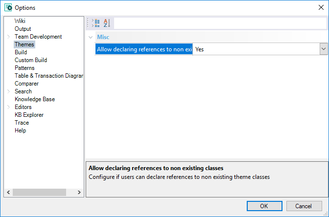
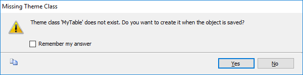

In this node, you can configure options related to Theme's usability  Misc node
(*) This dialog appears when setting a class that has not been defined and the "Allow declaring references to non existing classes" is set to 'Ask' (Default)  |
| Backlinks |
| Category:IDE Configuration Options |